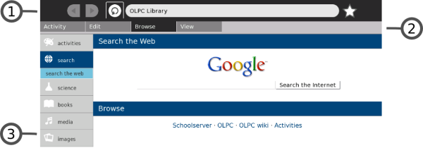
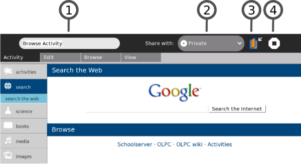
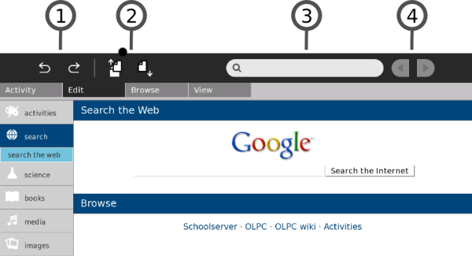
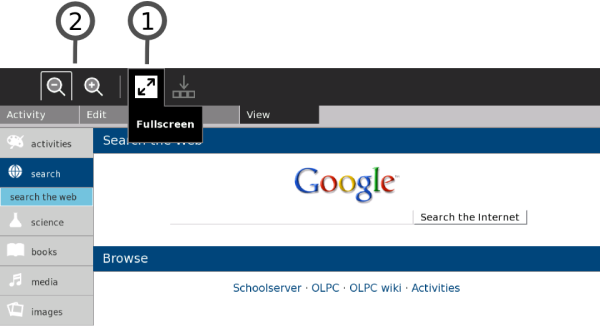
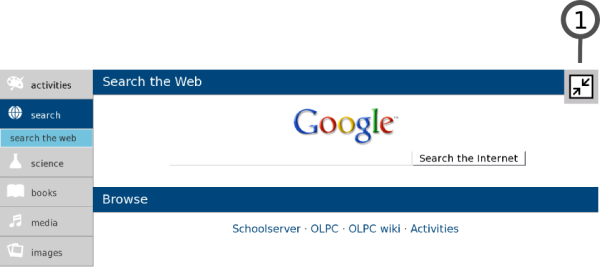

Activity View
When you play with an Activity you are using the Activity View. Return to the most recently used Activity that is still running by clicking the Activity View icon at the top left of the Frame (shown below).
You can also use the Activity button for this purpose if your keyboard has one. Use the F4 key if you are using a keyboard that does not have an Activity button.
Use the appropriate Activity icon in the top right of the Frame, from any View, to return to the Activity View for any running activity.
Sugar Activites always use the full screen. This figure shows the Activity View for the Browse activity.

- 1. Activity menus
- Activities have one or more menus that appear at the top of the screen.
- 2. Menu tabs
- Click on the tabs found just below the Activity menu to switch between the menus for an Activity.
- 3. Activity workspace
- The rest of the screen is used by the Activity itself, in this example, Browse.

All Activities have an Activities menu.
- 1. Activity name
- The content of the Activity name field is how this specific Activity session entry appears in the Journal. Be sure to enter a unique name here, if you want to make it easy to later find this session among the other instances of this same Activity shown in the Journal.
- 2. Share with menu
- Use the 'Share with' pull-down menu to share an Activity with your neighbors. Many Activities support sharing.
- 3. Keep button
- Click the Keep button to force an Activity to save its current state in the Journal.
- 4. Stop button
- Use the Stop button or press ctrl + esc to save the Activity in the Journal and close it.

Many Activities have an Edit menu:
- 1. Undo/Redo
- The undo and redo buttons are application specific but usually refer to undoing or redoing your most recent edits.
- 2. Copy/Paste
- There are buttons for copy and paste. You can also use the keyboard shortcuts ctrl + c and ctrl + v for copy and paste respectively. Items you copy end up on the clipboard, which is found in the left edge of the Frame. Items you paste come from the clipboard.
- 3. Search
- Many Activities support search: you can find text within the activity by entering it into the search box.
- 4. Back/Forward
- Another common pair of buttons allow you to step backward or forward through a sequence (in the case of Browse, these buttons step you through the recent pages you have been viewing).

Many Activities also have a View menu.
- 1. The Full-screen button
- Click the Full-screen button to make the Activity to use 100% of the display, hiding the menu.
- 2. Shrink/Grow
- Use the Shrink and Grow buttons to scale the display if the Activity supports this feature.

Leaving full-screen mode:
- 1. Full-screen button
- Use the Full-screen button to view the menus again.

Many Activities use trays at the bottom of the screen to hold collections.
- 1. Tray button
- Click the Tray button to toggle the appearance of the tray.
- 2. The tray
- The tray typically appears at the bottom of the screen. The Tray contains objects associated with the activity. In the Browse activity, bookmarks appear in the tray. In the Record activity, the media objects you create are placed in the Tray. Retrieve objects by clicking on their thumbnails in the tray.
Author : ActivityView
© adam hyde 2008
Modifications:
David Cramer 2008
David Farning 2008
Janis Grinbergs 2008
Tom Boyle 2008
Walter Bender 2008
License : General Public License